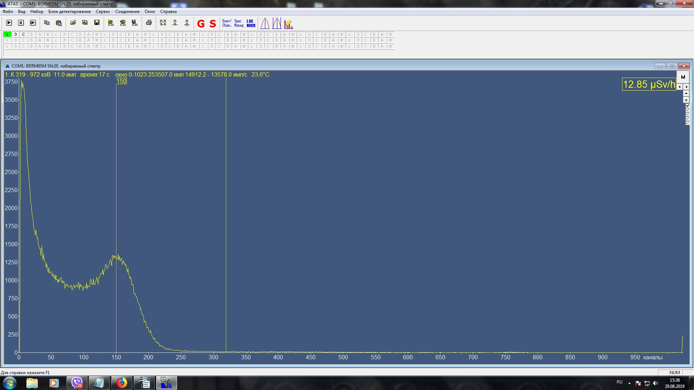
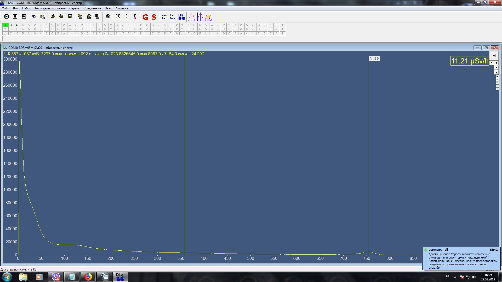

4. Проверить прошивку, при необходимости перепрошить.
5. Запустить программу ATAS: Выбрать Блок детектирования - Параметры стабилизации
Установить дискриминаторы 7, 15, 2, 2 подтвердить установку
Выключить светодиод (нажать LED OFF)
6. Установить пороги: Выбрать Блок детектирования — Пороги : нижний порог 990, верхний 850
7. Выставить высокое: Выбрать Блок детектирования — Высокое 11500
8. Настроить правый пик в 150 +/- 5 канал по 137Cs с активностью 105 Бк :
грубая подстройка - R44 R46, точная подстройка: Блок детектирования — Высокое в диапазоне от 10500
до 12000 ( Uвысокое на С49 должно быть 90-95В)
При наличии дополнительного пика до 5 канала его нужно сгладить при помощи нижнего порога.

9. Выставить 768 канал по светодиоду (без 137Cs): Выбрать Блок детектирования - Параметры
стабилизации
(нажать LED ON)
Грубая настройка R17(если не хватает 50 МОм параллельно С2 допаять резистора от 1000 кОм до 300
кОм), точная настройка: Блок детектирования — Усиление 1100+/- 100
Проверить задающее напряжение светодиода на выходе микросхемы D1.6 , должно быть 0,4 — 1,2 В. Можно
подрегулировать : Выбрать Блок детектирования - Параметры стабилизации - дискриминаторы — канал LED
(от 4 до 7).
10. Включить светодиодную стабилизацию: Выбрать Блок детектирования — Высокое — отнять 8000 от настроенного
высокого и внести результат.
11. Перепроверить пик по 137Cs. Если пик ушёл, скорректировать при помощи усиления.
12. Настроить по 241Am:
Замерить скорость счёта на фоне, после поднести 241Am. Рассчитать чувствительность (скорость счёта с
241Am минус скорость счёта на фоне)/активность 241Am(в кБк) (у 241Am
1075 активность 55кБ), Значение
должно быть в пределах 40-50 имп/кБк. Корректировать значение при помощи Нижнего порога.
Аналогично провести измерения с 137Cs, чувствительность по 137Cs — 125-140
имп/кБк. (Ссылка)
14. Настроить спектр по Торию (Th) выставить 750 канал +/- 30 каналов резистором R5

15. Проверить U высокое на С49 должно быть 90-95В.
16. Снять показания от трёх источников (241Am, 137Cs, 232Th) вплотную и на расстоянии 1 метра. Данные записать в паспорт